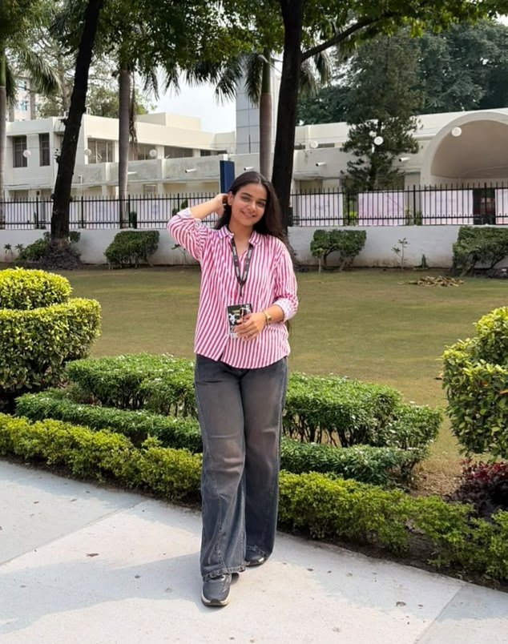

First-year ECE · IIT Roorkee
PrincySoni
I am a first-year Electronics and Communication Engineering student at IIT Roorkee, from Bilara, Jodhpur. Alongside my studies, I compete in taekwondo and pursue art and photography.
Discipline on the mat, colour on the page.
